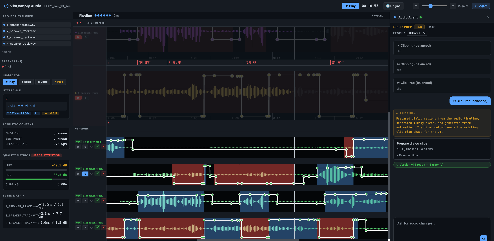
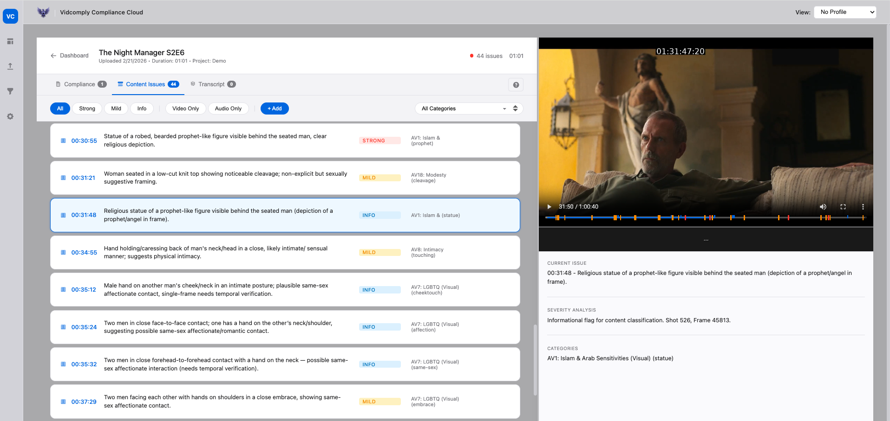
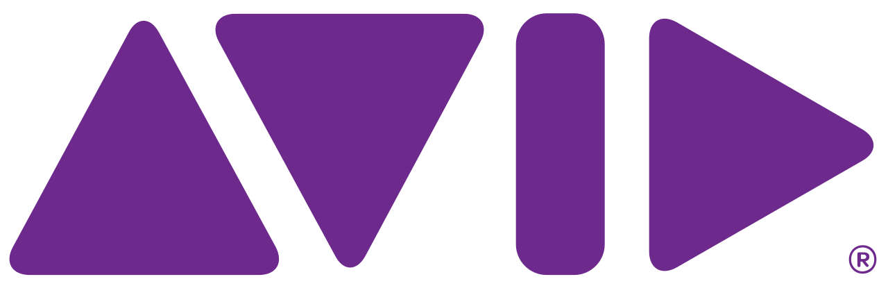

A short platform overview showing how VidComply moves from ingest through operator review to usable downstream outputs.
Platform
One page to show how VidComply fits the workflow.
VidComply fits between the assets teams already have and the deliverables they need to ship. This page combines the workflow map, the product proof, and the main business use cases into one place for buyers, operators, and post teams.
What this top-level overview should make obvious
- VidComply is not a point tool. It connects multiple execution layers across the same pipeline.
- The platform works with real post-production materials instead of forcing a synthetic workflow.
- Compliance, QC, video-post, audio-post, and export sit in one operational system.
- The rest of this page goes deeper into the interface, the localization proof, and workflow integrations.
How the platform fits the pipeline
Start with the materials already in the workflow, run them through the relevant execution layers, and export outputs teams can use immediately in review, editorial, delivery, and post.
1. Ingest
AAFs, ProRes masters, subtitles, archives
Start from the actual project materials instead of forcing a new workflow or file format.
Workflow entry point
→
2. Execution layer
Compliance & QC
Find issues, verify evidence, and generate reviewable outputs for downstream teams.
See compliance layer
→
3. Operator layer
Dynamic Global Compliance Platform
Give operators one place to review issues, profiles, playback context, and decisions.
See operator layer
→
4. Post layer
Post-Production Video
Support remediation, cleanup, timeline intelligence, and editorial handoff.
See video layer
→
5. Post layer
Post-Production Audio
Reduce manual prep through agentic automix, dialogue prep, and bleed-aware routing.
See audio layer
→
6. Export
Reports, sidecars, AAF-ready and editorial outputs
Return usable outputs that roundtrip into real post, review, and delivery environments.
See outputs
Business case
Lower the cost of repetitive first-pass work without replacing the teams that make the final decisions.
Operational case
Give operators, compliance teams, and post teams one system that fits the real workflow they already run.
Technical case
Work from existing media assets and hand back outputs that drop into current review, editorial, and delivery systems.
Post-Production Audio
The audio side of the platform is built for one business problem: expensive manual prep before the mix. The product reduces the hours spent sorting dialogue, handling bleed, and preparing sessions before the creative work begins.

Calculating phase relationships, attenuation logic, and dialogue prep across dense multi-track sessions.
A second UI view showing operator control across tracks, dialogue segments, and agent-driven prep decisions.
Dynamic Global Compliance Platform
This is the operator layer that makes compliance review manageable across teams, profiles, and markets. It is designed for operational clarity, not vague reporting.

The interface shows issue queues, severity analysis, playback context, and profile-aware review in one system.
Why this matters
- Operators work through concrete issues, not static reports
- Playback context and issue metadata stay in the same decision surface
- Dynamic profiles make different policy environments manageable
- One review layer reduces operational friction across teams
Compliance & QC
Compliance and QC are strongest when teams can verify issues quickly, keep humans in the loop, and move clean outputs downstream without re-arguing the source material.
Issue review in motion across platform checks, policy checks, and playback context.
Business-facing value
- Reviewable evidence instead of black-box moderation outputs
- Policy-aware prioritization for faster issue handling
- Human-in-the-loop sign-off for high-risk workflows
- QC outputs teams can carry into downstream systems
Post-Production Video
The video-post layer turns detection into usable remediation work. The point is not to stop at issues, but to help editorial and finishing teams act on them.
The broader engine view of how the platform scans, routes, and prepares work across media operations.
Why this matters
- Cleanup and remediation paths shaped for editorial teams
- Timeline intelligence that supports downstream handoff
- Catalog and release workflows without replacing creative finishing
- Outputs built for existing review and edit systems
Localization and formats are part of the platform proof.
This is valuable because it shows the platform is not only finding issues. It is also handling the operational reality of market variants, format adaptation, and territory-specific output preparation.
Localization and format adaptation in motion across platform-ready deliverables and market-specific outputs.
Why this belongs on the platform page
- It proves the platform handles downstream market complexity, not only upstream detection.
- Operations teams can see how one title branches into multiple territory-specific outputs.
- Compliance and localization workflows stay connected instead of splitting into separate manual tracks.
- This is a concrete example of enterprise media plumbing, not generic AI positioning.
 Original
Original
 FR
FR
 JP
JP
 RU
RU
 ES
ES
Outputs teams can actually use
The platform is most valuable when it shortens the first pass and returns outputs that fit the tools teams already trust.

Frame.io integration should be visible here, not hidden behind a link.
Frame.io matters because it shows how VidComply fits the review environment teams already use. That proof belongs directly on the platform page as part of the workflow story.
VidComply surfacing compliance and QC review inside the Frame.io environment.
Why this matters operationally
- Review happens where teams already collaborate and approve work.
- Compliance issues carry playback context and evidence into the review layer.
- Operators keep sign-off control without forcing a new review environment.
- Open the dedicated Frame.io integration page for the deeper explanation.
Once the workflow fit is clear, move to the business proof.
Use the Case Studies page to show how these workflows translate into lower prep cost, clearer compliance operations, and faster post-production handoff.